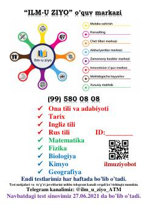

T2Ona tili, tarix va matematika fanlaridan test savollari to'plami.
Ushbu to'plam "ILM-U ZIYO" o'quv markazi tomonidan tayyorlangan ona tili, O'zbekiston tarixi va matematika fanlaridan test savollarini o'z ichiga oladi. Test materiallari abituriyentlarga bilimlarini sinash va imtihonlarga tayyorgarlik ko'rish imkonini beradi. Qo'llanma majburiy fanlar bloklari bo'yicha tuzilgan.